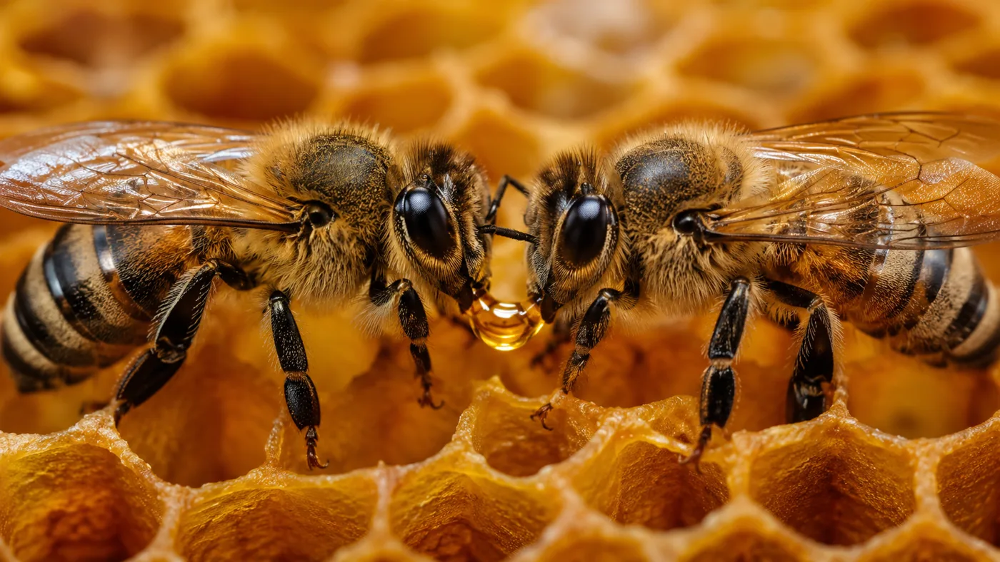

Quand une abeille rentre de sa tournée des fleurs, elle ne va pas déposer elle-même son nectar dans les alvéoles. Elle le transmet, bouche à bouche, à une autre abeille de la ruche. Celle qui ramène ne l'emmagasine pas : elle le donne, et c'est sa collègue qui sera chargée de l'étaler.
Cette receveuse dépose le nectar par petites gouttes au sein des alvéoles, en couche fine. Pourquoi ? Pour le déshydrater. Ventilé par les ailes de milliers d'ouvrières, le nectar perd peu à peu son eau, jusqu'à passer sous les 18 % d'humidité. C'est ce séchage qui protège le miel de la fermentation — et lui permet de se conserver des années.
Le pollen, lui, suit un tout autre chemin : les abeilles qui le rapportent le tassent directement dans les alvéoles, avec la tête. Deux récoltes, deux méthodes — et une organisation d'une précision étonnante.
La prochaine fois que vous ouvrez un pot, pensez-y : chaque goutte de miel est passée de bouche en bouche avant d'arriver dans la vôtre.